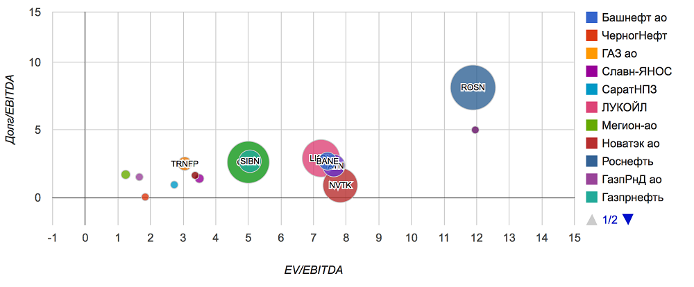

Мультипликатор P/S — это отношение рыночной цены акции к выручке, приходящейся на одну акцию. Его используют для сравнения компаний одной отрасли, где маржинальность будет на одном уровне. Лучше всего подходит для тех отраслей, где считается, что выручка последовательно создает соответствующие объемы прибыли или денежного потока, — например для торговли.
Преимущество P/S в том, что его можно рассчитать для всех компаний, так как его значение бывает только положительным, потому что выручка может быть только положительной.
Значение коэффициента меньше 2 считается нормой. P/S меньше 1 указывает на недооцененность.
P/BV — Рыночная капитализаци / Балансовая стоимость
Мультипликатор P/BV — это отношение рыночной цены акции к стоимости активов, приходящихся на одну акцию. Его удобно использовать для сравнения банков, потому что активы и пассивы банков почти всегда соответствуют их рыночной стоимости. P/BV не говорит о способности компании приносить прибыль, но дает представление о том, не переплачивает ли акционер за то, что останется от компании, в случае ее мгновенного банкротства.
P/BV меньше единицы — хорошо. На 1 рубль рыночной капитализации приходится более одного рубля реальной стоимости компании. Если компания разорится и акционерам разрешат вернуть свои доли, то им будет что возвращать.
P/BV больше единицы — плохо. На 1 рубль рыночной капитализации приходится менее одного рубля реальной стоимости компании. Если компания разорится и акционерам разрешат вернуть доли, то на всех не хватит.
EV - Стоимость компании
EV — enterprise value
Мультипликатор EV — это справедливая стоимость компании. Определяется так: EV = Рыночная капитализация + Все долговые обязательства − Доступные денежные средства компании.
Посмотрите на две компании и скажите, какая из них обойдется вам дороже при покупке?
EV «Русгидро» и «Интер рао»
| «Русгидро» | «Интер рао» |
|---|
| Капитализация | 358 | 396 |
| + | + |
| Долг | 332 | 152 |
| – | – |
| Доступные деньги | 67 | 96 |
| = | = |
| EV | 623 | 452 |
Цена «Русгидро» на фондовом рынке — 358 млрд рублей, цена «Интер рао» — 396 млрд. Получается, что «Интер рао» как будто дороже для вас на целых 38 млрд рублей. Но на самом деле это не так, и EV нам это объясняет:
После покупки «Русгидро» вы получите долги еще на 332 млрд рублей, а в кассе будет 67 млрд — получится, что реально для вас компания обойдется в 623 млрд рублей.
А если вы купите «Интер рао» за 396 млрд рублей, то вы также получите ее денежные средства в размере 96 млрд. Долг же составит 152 млрд, что даст общую реальную стоимость 452 млрд рублей. Получается, что на самом деле «Русгидро» дороже, причем аж на 171 млрд рублей.
EV — очень важный показатель сам по себе, но главная его польза — в сравнении со следующим показателем (EBITDA).
EBITDA - это прибыль компании до выплаты процентов, налогов и амортизации
Мультипликатор EBITDA — это прибыль компании до выплаты процентов, налогов и амортизации.
EBITDA нужна нам, чтобы понять, какую прибыль приносит непосредственно бизнес компании. Умеет компания зарабатывать деньги?
Если еще проще, то EBITDA — это сколько бы компания зарабатывала в идеальных условиях, если бы все заводы у нее уже были, станки не изнашивались, а государство ввело для нее нулевую налоговую ставку.
Отдельная польза мультипликатора EBITDA в том, что он позволяет удобно сравнивать компании одной отрасли, но из разных стран. Ведь если в одной стране налог 13%, а в другой 50%, то, имея одну и ту же прибыль от бизнеса, мы получим разную чистую прибыль. По EBITDA прибыль будет одинаковой.
EBITDA «Русгидро» и «Интер рао»
| «Русгидро» | «Интер рао» |
|---|
| Прибыль до налогов | 55 | 68,5 |
| + | + |
| Амортизация | 24 | 23 |
| + | + |
| Процентные расход | (−0,902) | 14 |
| = | = |
| EBITDA | 78,1 | 105,5 |
EV/EBITDA
БОЛЬШЕ НУЛЯ, МЕНЬШЕ — ЛУЧШЕ
Мультипликатор EV/EBITDA — это рыночная оценка единицы прибыли.
С помощью этого показателя сопоставляют компании, которые работают в разных системах учета и налогообложения. Он похож на уже известный вам P/E — соотношение цены и прибыли. Но только теперь вместо рыночной капитализации мы видим реальную рыночную цену компании. А вместо чистой прибыли — более достоверное значение EBITDA.
Помните, мы говорили, что по P/E некорректно сравнивать компании из разных отраслей и в разных жизненных фазах? Проблема была как раз в том, что мы делили рыночную капитализацию на прибыль после всех выплат, налогов и капитальных расходов. А теперь мы смотрим на более чистые и достоверные показатели — по ним компании уже можно сравнивать с большей уверенностью.
EV/EBITDA «Русгидро» и «Интер рао»
| «Русгидро» | «Интер рао» |
|---|
| Рыночная капитализация | 358 | 396 |
| Общий долг | 332 | 152 |
| Денежные средства компании | 67 | 96 |
| EV | 623 | 452 |
| | |
| Прибыль до налогов | 55 | 68,5 |
| Чистая прибыль | 39,8 | 61,3 |
| Амортизация | 24 | 23 |
| Уплаченные проценты | −0,902 | 14 |
| EBITDA | 78,1 | 105,5 |
| | |
| P/E | 9,01 | 6,47 |
| EV/EBITDA | 7,95 | 4,29 |
Рассчитанный мультипликатор EV/EBITDA показывает нам, что реальное положение дел обеих компаний лучше, чем это говорит быстрый расчет по P/E. У компаний очень мощная инфраструктура, на которую идет списание амортизации 23—24 млрд рублей в год. Существенная часть прибыли «Интер рао» также идет на погашение долга. А это дополнительные 14 млрд прибыли, которые может добавить компания после погашения долга. Все это учитывается в EV/EBITDA и не учитывается в P/E.
Принцип оценки EV/EBITDA такой же, как и P/E — чем меньше, тем лучше, а отрицательное значение, как правило, говорит об убытках.
Если бы мы ограничились сравнением P/E, то обе компании не показались бы нам привлекательными. Однако более точный и детальный EV/EBITDA показал, что «Интер рао» не просто явный фаворит в этом сравнении, но и что акции этой компании в принципе хорошая идея для покупки.
Долг/EBITDA
МЕНЬШЕ — ЛУЧШЕ
Мультипликатор Долг/EBITDA отражает количество лет, которое нужно компании, чтобы погасить своей прибылью все долги. Чем меньше лет, тем лучше.
Инвесторы чаще всего сначала смотрят именно на мультипликаторы EV/EBITDA и Долг/EBITDA. Часто их объединяют в одну пузырьковую диаграмму, на которой по оси Х показатель EV/EBITDA, по оси Y — Долг/EBITDA, а размер окружности определяют капитализацией компании. Далее таким образом на график помещают все компании одной отрасли:

Самые недооцененные компании на этой визуализации будут слева внизу, около начала координат. Разумному инвестору остается выбрать компанию слева снизу, изучить ее и проинвестировать.
EPS — earnings per share
РОСТ — ХОРОШО
Мультипликатор EPS — это чистая прибыль на одну обыкновенную акцию. Измеряется как отношение прибыли на количество акций. Для анализа чаще используется рост EPS, то есть процентное изменение прошлого показателя EPS к нынешнему. Очень часто резкий рост или падение прибыли является предвестником соответствующего изменения цены акций.
Например, по итогам 2016 года «Детский мир» показал рост прибыли на 291%. После выхода финансового отчета цена акций поднялась на 35% и сейчас находится в восходящем тренде.
По итогам 2016 года ретейлер «Дикси» показал падение прибыли на 573%. После выхода финансового отчета цена акций упала на 35% и сейчас находится в нисходящем тренде.
При этом сильно полагаться на изменение EPS не стоит. Лучше использовать этот мультипликатор как дополнительный критерий отбора, когда уже произведен отсев по основным мультипликаторам, рассмотренным выше.
ROE — return on common equity
БОЛЬШЕ — ЛУЧШЕ
Мультипликатор ROE — это доходность акционерного капитала в процентах годовых, то есть рентабельность. По нему можно судить об эффективности компании.
Например, возьмем две автомойки: первая рассчитана на 30 машин, а вторая на 5. Собственных активов у первой намного больше: бо́льшая площадь земли, больше само здание автомойки, больше оборудования. Но если при этом обе автомойки дают одинаковую прибыль, мы увидим перекос в показателе ROE: у маленькой автомойки он будет намного выше. ROE сообщит нам, что маленькая автомойка эффективнее и что закупленное ей оборудование (собственный капитал) окупается гораздо быстрее. Так что мы как инвесторы выберем именно автомойку на 5 машин.
А вот реальный пример с уже рассмотренными ранее компаниями.
ROE «Русгидро» и «Интер рао»
| «Русгидро» | «Интер рао» |
|---|
| Прибыль за год | 40 | 61 |
| / | / |
| Собственные активы компании | 650 | 419 |
| × 100% | × 100% |
| ROE | 6% | 15% |
Получается, что «Интер рао» — более эффективная компания, рентабельность собственного капитала у нее выше.
Особенности использования мультипликаторов
Мультипликаторы следует применять для сравнения компаний из одной отрасли, потому что в зависимости от типа бизнеса компании, его цикличности или других свойств показатели мультипликаторов могут заметно отличаться.
Представьте, например, насколько могут отличаться собственные средства и капитал у Яндекса и «Газпрома». Яндексу не нужно строить трубопровод, чтобы зарабатывать деньги.
А если сравнить отношение прибыли Яндекса к выручке и, например, прибыль сети «Магнит» к выручке? Рентабельность бизнеса совершенно иная, поэтому такое сравнение не всегда корректно.
Разумная инвестиционная стратегия — найти лучшие по мультипликаторам компании в каждой отрасли и составить диверсифицированный инвестиционный портфель.
Еще одна особенность использования мультипликаторов относится к финансовой отчетности банков. В ней вы не найдете выручки, а долги банков нельзя считать так, как мы их считаем для обычных компаний. Именно поэтому для сравнения банков мы не можем использовать целый ряд мультипликаторов, а именно: P/S, EV/S, EV/EBITDA, долг/EBITDA. Вместо них можно использовать самые универсальные P/E и P/BV.
Запомнить
- Мультипликаторы отражают отношение между рыночной капитализацией компании и финансовыми показателя бизнеса. Это помогает сравнить разные компании по единой шкале.
- Недооцененные компании подвержены меньшему риску.
- Анализировать компании на основе мультипликаторов следует по совокупности всех показателей, а не по одному.
- Мультипликаторы лучше использовать для сравнения компаний одной отрасли, добавляя таким образом в свой портфель лучшие компании из каждого сектора.
Полезные ссылки
Компании по секторам экономики
Фундаментальный анализ акций ММВБ